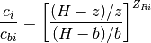
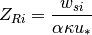

proffilo.profile.RouseProfile¶
-
class
proffilo.profile.RouseProfile¶ Rouse concentration profile model.
The Rouse formula is given by:

where the Rouse number :math`Z_{Ri}` is given by:

-
attribute¶ Another string.
- Type
str
-
__init__()¶ Initialize the BaseProfile.
- Parameters
depth (flow) – Flow depth [m].
z_start (float, optional) – Profile starting height [m]. Default is 0.
nz (int, optional) – Number of discrete vertical coordinates in
z, default is 50.
Methods
__init__()Initialize the BaseProfile.
Compute values of the profile.
concentration_rouse(flow_depth, b, cb, Rou)show_profile([block, save_str, return_ax])Show the profile.
Attributes
Value of profile vector.
Vertical coordinate vector.
Normalized vertical coordinate vector.
-
abstract
compute_values()¶ Compute values of the profile.
Must be reimplemented by subclasses.
-
show_profile(block=False, save_str=None, return_ax=False, **kwargs)¶ Show the profile.
Show the profile in a plot.
- Parameters
block (bool, optional) – Whether to pause script execution by showing the plot. I.e., the
blockargument in matplotlib’splt.show().save_str (str, optional) – String to save the output file.
return_ax (bool, optional) – Whether to return the axis object; default is
False. IfTrue, block and save_str are ignored and the axis is returned before saving or showing.**kwargs (optional) – Any arbitrary
matplotlib.pyplot.plot()keyword arguments for the plot specification. Note that these specs are passed to all lines.
- Returns
ax – The axis object. Only provided if parameter
return_ax=True.- Return type
matplotlib.pyplot.axes
-
abstract property
val¶ Value of profile vector.
-
property
z¶ Vertical coordinate vector.
Vertical coordinate vector [m].
- Type
ndarray
-